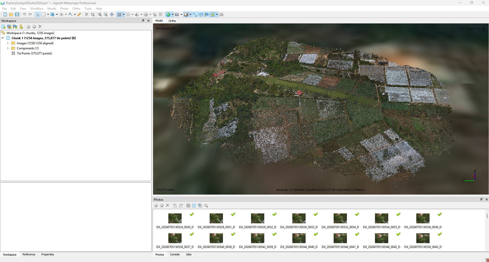
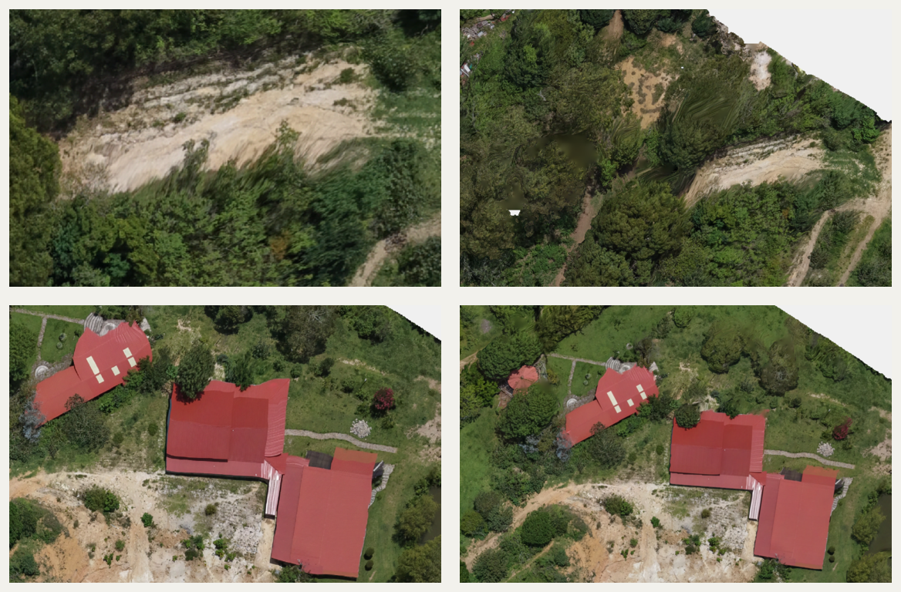

01
Carga y calidad
Revisión de metadatos, calidad y cobertura de las 1,258 imágenes antes del alineamiento.
Se organizó el procesamiento como una secuencia progresiva de ocho etapas, desde la revisión inicial de las 1,258 fotografías hasta la comparación final de ortomosaicos. Cada fase fue validada antes de avanzar, manteniendo los valores realmente utilizados y documentando tanto las decisiones técnicas como los resultados obtenidos.
El propósito de esta sección es presentar la lógica de trabajo utilizada para transformar las fotografías aéreas en productos fotogramétricos verificables. El flujo integra control de calidad, orientación del bloque, ajuste con puntos GNSS, depuración de observaciones, reconstrucción tridimensional, clasificación del terreno y generación de modelos y ortomosaicos. La metodología se aplicó de forma secuencial para que cada resultado sirviera como control de calidad de la fase siguiente.
| Elemento | Valor |
|---|---|
| Imágenes | 1,258 |
| Altura estimada | 123 m |
| GSD | 4.32 cm/píxel |
| Área | 0.142 km² |
| Software | Metashape Professional 2.0.1 |
La secuencia se presenta verticalmente para facilitar la lectura paso a paso. Cada imagen puede ampliarse para revisar los parámetros y evidencias del proceso.

Revisión de metadatos, calidad y cobertura de las 1,258 imágenes antes del alineamiento.

Orientación de cámaras y generación de la nube dispersa con el 100 % de las fotografías.

Importación, marcado y ajuste del bloque mediante cuatro puntos GNSS.

Depuración gradual por incertidumbre, precisión de proyección y error de reproyección.

Reconstrucción densa en calidad Medium y filtrado Mild.

Separación del terreno mediante parámetros adaptados al entorno agrícola.

Generación de la superficie visible y del terreno desnudo en UTM 15N.

Comparación DTM–DSM y revisión visual de bordes, árboles y edificaciones.